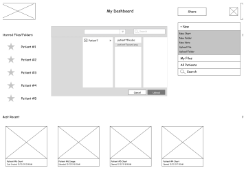

88%
of users emphasized the importance of collaboration with other medical professionals, staff, and other healthcare institutions

In healthcare, efficiency is key, yet, UX in the healthcare industry is not always a priority and in some cases, been a barrier for medical professionals to complete their work. This project gave me the opportunity to tackle this barrier.
See PrototypeIn many cases, healthcare tools are riddled with usability issues with the interface often overwhelmingly crowded with information making it unclear with a lack of scannability. When there’s that kind of cognitive overload in the medical field, the risk is much more significant since it may impact lives.
By keeping our users who are busy medical professionals in mind, we identified main design components that was necessary in creating an efficient, simple, and functional product to maximize scannability. The designs should be used to support the important functionalities of a medical cloud and storage tool and not cause friction for the user, allowing for efficient finding of information and easy navigation.
UX Design
User Research
Visual Design
Brand Identity
Figma
Draw.io
Usability Hub
Invision
Competitive Analysis
User Survey
User Personas
User Stories & Flows
Wireframes + Prototype
Brand Style Guide
Usability Testing
Hi-Fi Mockups
Final Hi-Fi Prototype
A user survey was created and directed towards healthcare professionals who were the target audience. I asked questions regarding which features of a cloud tool they find most important and what can be improved.
These sets of stats would be what sets the basis of this project:
88%
of users emphasized the importance of collaboration with other medical professionals, staff, and other healthcare institutions
67%
of users would appreciate a feature that allows them to share documents and media files more easily
75%
of users cited pain points in difficulty navigating current medical systems
70%
of users noted difficulty in finding important information quickly
A SWOT analysis was performed on Google Drive, Dropbox, and Microsoft OneDrive.
The purpose of selecting these competitors were their simple, intuitive, and functional cloud features that could be applied to a healthcare tool. It was also a great way of comparing how other industries integrated these cloud apps to facilitate better business processes.
 Easy to
Share
Simple
Functional
Accessible
Intuitive
Easy to
Collaborate
Easy to
Share
Simple
Functional
Accessible
Intuitive
Easy to
Collaborate
These personas were developed to fully flesh out the goals and frustrations of our users. The main goals are understanding and finding pertinent patient data quickly and share information with other medical staff to treat patients effectively. The main frustrations are finding electronic records confusing and spending too much time finding relevant information.
Who are we designing for? How would the user use our product?
Charles Walker
Age: 51
Occupation: Cardiologist
Location: Nashville, TN
Gender: Male
"New technology should make your job easier and improve the healthcare process"
- Spend time treating patients as effectively and efficiently as possible
- Share files with other medical staff to help with documentation and entering data
- Find pertinent patient data quickly
- Finds the hospital's electronic medical record system confusing
- Rather keep handwritten notes on patients
- Doesn't have time to take classes on how to use the electronic record system
Jaime Paillard
Age: 29
Occupation: Pediatric Intern
Location: Pittsburgh, PA
Gender: Female
"My time should be spent treating patients. I chose medicine to work with people and not to do data entry"
- Understand patient charts and files quickly
- Collaborate with other medical professionals to diagnose and treat patients
- Learn by seeing as many patients as possible
- Spends too much time contacting other healthcare institutions for files
- Unable to upload media files to patient charts in the system
- Wastes time trying to find patient info and completing unnecessary documentation
From the user research completed, there was enough data and feedback collected to create a MVP. These user stories and the specific tasks were developed based on priorities in easing the user’s frustrations that we explored in the User Personas.
User Flows were created from the high priority tasks of being able to save and edit patient charts, share files and collaborate with medical professionals, upload files and media, and organize files. Creating user flows was a good way to visually confirm that we were creating an efficient, simple, and functional product with tasks that can be completed with the least amount of steps necessary.
| User | Task | Importance |
|---|---|---|
| New/returning user | Save and edit patient charts and information | High |
| New/returning user | Collaborate with doctors and medical staff in real-time | High |
| New/returning user | Share files with other medical staff | High |
| New/returning user | Uploading files and media (videos, images, PDFs, etc) | High |
| New/returning user | Ability to organize and categorize patient files | High |
| New/returning user | Share files with other hospitals and healthcare institutions | High |
| New/returning user | Creating documents (word docs, spreadsheets, etc) | Medium |
| New/returning user | Uploading medical notes and journals | Medium |
| New/returning user | Store medical imaging | Medium |
| New/returning user | Save content from the web | Medium |
| New/returning user | Search capability by tags, groups, labels, etc | Low |
| New/returning user | Build reports from patient data | Low |
| New/returning user | Create and build presentations | Low |
| New/returning user | Offline Access | Low |
Save & Edit Patient Charts
Share Files to Collaborate
First iterations of wireframes were rough sketches of different elements of the tool.
The second iterations of the wireframes were created in Figma. When building the user flows into screens, it was clear when there were missing components that needed to be added. By developing each concept, creating a prototype, and then testing the prototype, it helped me realize which process wasn’t fully developed and where we needed to redesign. I conducted usability testing on the completed wireframes and redesigns from testing results included adding more confirmation messages and additional ways to return back to the Dashboard.
.svg)
.svg)
.svg)
The brand is about care and compassion and I wanted the visuals to align with that. The typography chosen, Lora and Lato, are simple and have a certain roundness that give a sense of openness and care. The color palette includes a Dark Blue that contrasts with the Periwinkle and the light grey, which adds a level of calmness, while remaining professional looking. The logo was a result of combining the name of the product, CareCloud with an EKG design.
The wireframes were used as the basis of creating the initial hi-fidelity mockups, also designed in Figma.
I created preference tests to refine the logo and the dashboard with Usability Hub.
The testing resulted in selecting the logo with the CareCloud name split to be above and below the heart beat symbol. The dashboard with the periwinkle blue was overwhelmingly the preferred dashboard and feedback from mentors resulted in the current dashboard in the final prototype.
In-person usability tests were also conducted on prototypes to ensure that the flow of the screens were intuitive and inline with the brand of being easy to use. A few changes were made after the results of the usability tests including moving the confirmation message to be more prominent on the screen and redesigning the task of moving a file to a folder.
After rounds of preference testing and fully creating a style guide, the first iterations were modified to include a more prominent color palette and logo refinement.
This project gave me opportunities to assess areas of improvement. More of the survey questions could have been specific to the current medical record systems used by the participants and exact areas in the interface that needed revision. Instead of looking at general pain points among medical professionals, getting more specific answers could have driven the solution to be more useful.
This project also gave me the insight into the healthcare industry that I was not expecting. As such a research heavy and highly advanced field, it lacked the user research and user experience focus needed to build tools and apps that would support the medical professionals in maximizing their time with patients. If given the opportunity, I would would love to gather more data and feedback by shadowing medical professionals to truly capture how each tool is used and can be improved upon based on each professional’s workflow. The ability to go beyond just looking at individual tools and look at the bigger picture of the UX ecosystem in healthcare could provide an even bigger impact on addressing pain points and gaps for medical professionals and patients.
See Other Projects